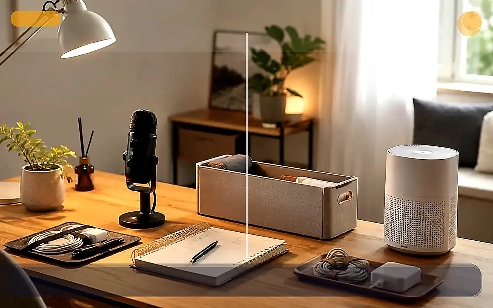

퇴근 후 부업을 시작하기 좋은 최소 장비 조합

TrendFlow Guide퇴근 후 부업은 장비보다 시작 루틴이 더 중요합니다. 다만 책상에 앉자마자 바로 시작할 수 있는 최소 장비를 갖추면 피로한 상태에서도 실행 확률이 올라갑니다.
핵심 정리
이 글은 단순한 상품 나열이 아니라, 어떤 문제를 해결하기 위해 어떤 조합이 필요한지 판단할 수 있도록 정리했습니다.
이런 상황이라면 이렇게 시작하세요
사야 할 것 같지만 확신이 없다면
인기 상품은 많지만 내 상황에 정말 필요한지 판단할 기준이 없으면 쉽게 광고처럼 느껴질 수 있어요.
바로 사기부터 하지 마세요
좋아 보이는 상품을 먼저 고르기보다 내가 반복해서 겪는 불편함이 무엇인지 먼저 보는 편이 후회가 적습니다.
구매 전 기준을 먼저 확인하세요
사용 빈도, 놓을 위치, 이미 가진 대체품, 사지 않아도 되는 경우를 먼저 체크하세요.
지금 해볼 것
바로 사기 전에 확인하세요에서 내 상황에 맞는 항목 1개만 골라보세요.
퇴근 후 시작 루틴
- 책상 위에는 오늘 쓸 도구만 둡니다.
- 노트북 높이를 맞춰 자세 부담을 줄입니다.
- 타이머로 25분만 시작합니다.
- 플래너에 결과물을 1개만 적습니다.
- 끝난 뒤 다음 작업을 미리 적어둡니다.
추천 아이템 조합
선택 기준 비교
| 구분 | 먼저 볼 기준 | 주의할 점 |
|---|---|---|
| 입문 | 지금 가장 불편한 문제 1개 | 한 번에 많이 사지 않기 |
| 확장 | 반복 사용 빈도 | 디자인보다 실제 사용 위치 확인 |
| 유지 | 정리와 보관이 쉬운지 | 관리하기 어려우면 다시 방치됨 |
자주 실패하는 패턴
- 장비를 많이 사놓고 시작 시간을 정하지 않는다.
- 피곤한 날에도 긴 작업을 목표로 잡는다.
- 결과물을 기록하지 않아 누적감이 없다.
구매 전 확인할 질문
- 내가 해결하려는 문제가 이 조합과 직접 연결되는가?
- 이미 갖고 있는 물건으로 먼저 대체할 수 있는가?
- 한 번에 많이 사기보다 가장 필요한 1개부터 시작할 수 있는가?
바로 사기 전에 이 기준부터 확인하세요
추천 대상
퇴근 후 부업, AI 영상 제작, 자취방 개선을 시작하려는 사람
먼저 볼 항목
책상 조명, 핀마이크, 수납/생활 개선 아이템
사지 않아도 되는 경우
사용 위치와 목적이 정해지지 않았다면 구매를 미루세요.
먼저 해볼 것
기존 물건으로 3일만 테스트하고 부족한 항목만 비교하세요.
이 페이지에는 제휴 링크가 포함될 수 있으며, 구매 시 일정액의 수수료를 제공받을 수 있습니다.
지금 해볼 것 선택
바로 구매를 유도하기보다, 내 상황에 맞는 글을 더 읽고 필요한 항목만 비교하는 흐름을 추천합니다.
바로 사기 전에 하나만 확인하세요
사용 빈도, 놓을 위치, 사지 않아도 되는 경우를 먼저 체크하세요.